04/29(四)今年的墾丁之旅熱血成行嘍！.gif")
因為摩卡拔意外有兩天假，我們前天晚上"臨時"決定殺去墾丁！
熱情的噗友一聽到我要出發立刻給予很多訂房資訊，大感謝啊！
出發時天氣超好的，摩卡卡超開心！
有發現他還抱我手臂嗎!? 絕對不是撒嬌，只是想ㄎㄨㄟˋ頭而已～
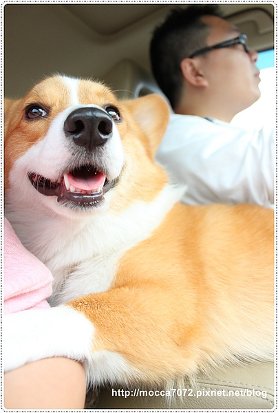
話說前兩年我們去墾丁都非常幸運的遇到颱風攪局，.gif")
颱風對條條之墾丁行 day1
沒完沒了的墾丁大街 day 2
今年想說偷吃步避開颱風季節，應該沒那嘛衰３年都讓我遇到強颱吧！
結果查了一下氣象中部以北全部轉晴，南部會下雨！掯......gif")
不過颱風都遇過惹，這點小雨真的不算什麼！我們天兵看狠開滴～XD
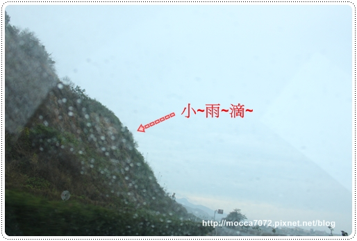
第一天的民宿，我們選了"戀戀白砂"兩人房，一晚2400元(淡季價格)
我們一去老闆娘就立刻提到忍犬隊有在這集訓過歐！印象深刻～.gif")
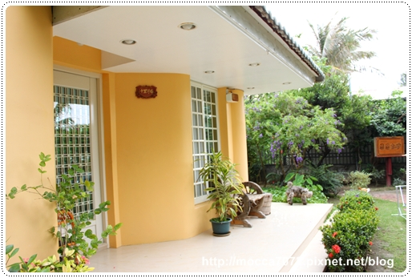
兩人房的房間設備很簡單，有一張舒適的大床
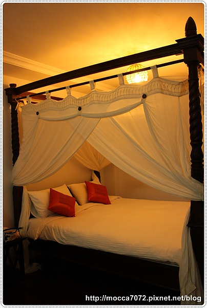
一組小沙發＋電視＋小冰箱，房門出去有一個小小小的院子
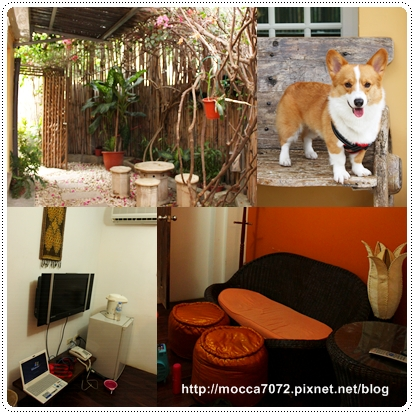
戶外有一個小小的泳池，應該比較適合小捧油戲水

戶外還有一個草皮，不算大但也很夠摩卡卡在這噴跑啦！.gif")
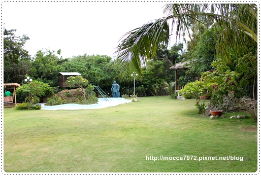
第一天到墾丁天氣是陰涼的，但沒有下雨就很阿彌陀佛惹！(笑)
結果摩卡拔突然說：你快點帶摩卡跑啦！我覺得他今天一定會飛！
我還說怎嘛可能，一整年都在拍這小子從來沒成功起飛過啊！.gif")
結果出乎意料的～我的寶貝卡卡終於 飛～起～來～啦！

本來以為是巧合給摩卡拔拍到！
結果那天卡卡可是飛個不停耶～傻眼惹！

我說我們天兵家族願望很小的，只要不是颱風！
我們就猴嗨森啦！ XDDDDDDD
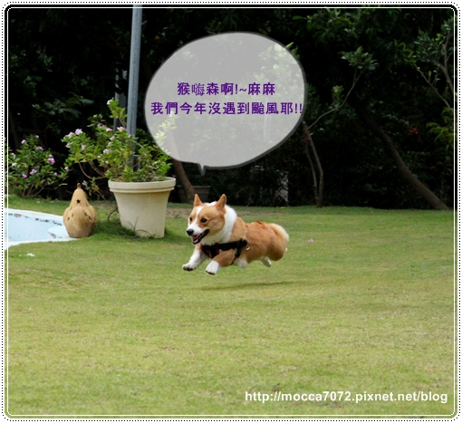
可愛的父子檔，拔拔對卡卡今天的表現滿意極惹！
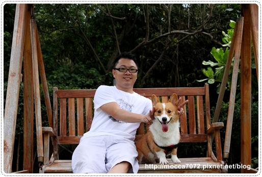
民宿老闆養的小鳥發出聲音被摩卡卡發現惹！
我一開始都還沒看到鳥籠，這矮小子居然先看到～厲害厲害！.gif")
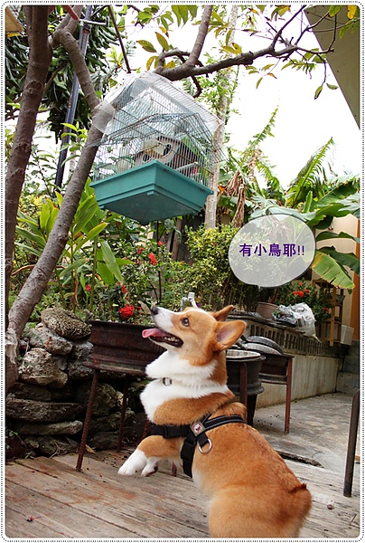
愛鳥人士～許摩卡企圖爬樹找小鳥！哈哈哈哈

為了小鳥這種"鍥而不捨"的精神我也很佩服他
也為了不讓他的"魯肉腳"站太久，趁天色還早我們就往白沙灣出發嘍！
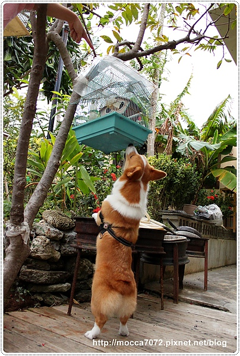
離民宿大約１分鐘的路程就是白沙灣啦！
比起南灣的沙灘，這裡真的超美超乾淨的～人也很少！
那天小貓沒幾隻，根本就是包場超棒的！.gif")
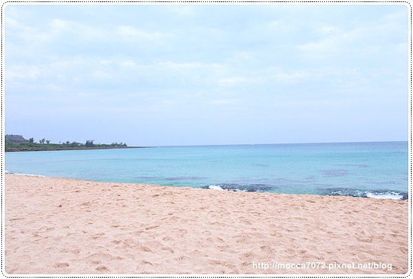
把摩卡卡放開隨他跑，他很愛在沙灘狂奔！
（這就為什麼他回台北會累成豬頭臉啊～）.gif")

因為這裡的沙乾淨也比較白，所以當初海角七號也是選擇這裡做拍攝地點！
重點是沒人也沒小孩，對狗狗來說自在多啦！

但這欠扁小鬼，我都往海裡走了，他還賴在沙灘不動！
基本上摩卡卡是不會主動下海滴～比起玩水，其實他更愛玩沙，
但他倒也不會怕水或排斥下海！
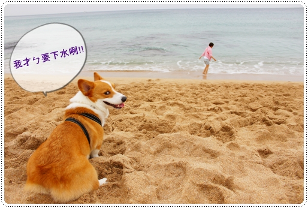
所以只要我跟拔拔其中一人往海裡走，他就會乖乖的默默跟上！.gif")
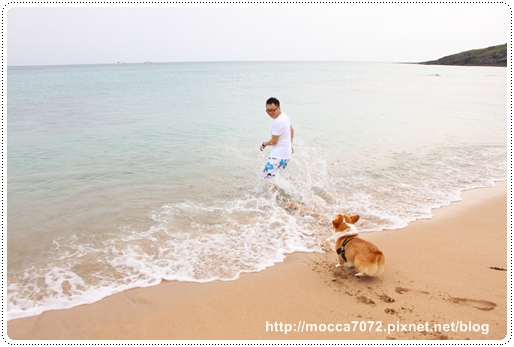
天氣陰涼，下水其實蠻冷的，這兩枚弱雞只願在淺淺的岸邊玩耍！
反正重點卡卡有浮起來就算有游泳了唄～XD

飄浮摩卡~乾杯！.gif")
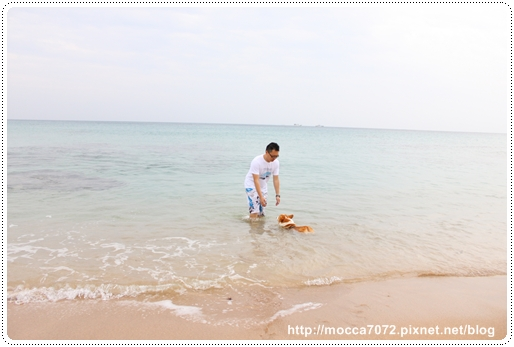
岸上一條龍～～活跳跳！
小傻瓜！在沙灘跑明明就超費力的～～

來墾丁這嘛多次，第一次來白沙灣！
雖然它離熱鬧的墾丁大街有段距離，但帶狗狗來這裡玩水好玩多啦！
離戀戀白砂好近，玩髒了馬上可以回民宿洗香香！
以後來墾丁至少要安排一天住這裡～

晚餐我們開車到墾丁大街吃飯，結果踩到雷啦！
叫AMY'S....什麼的鬼的，我忘記惹!XD
它的牛肉義大利味道好像微波調理包歐！超普通也不便宜

pizza就好一點了，不過帶狗狗只能坐室外！
以後還是乖乖吃小吃或吃泰式料理好了～XD
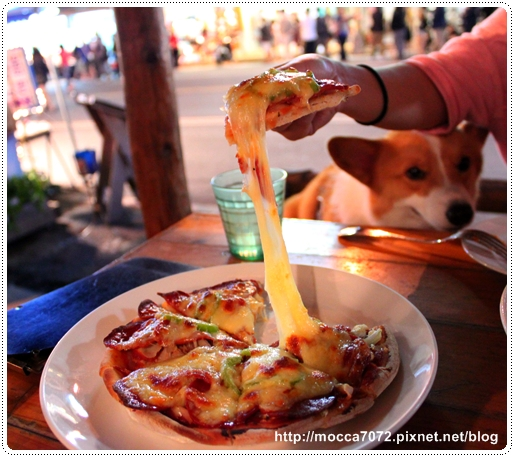
(未完待續......)